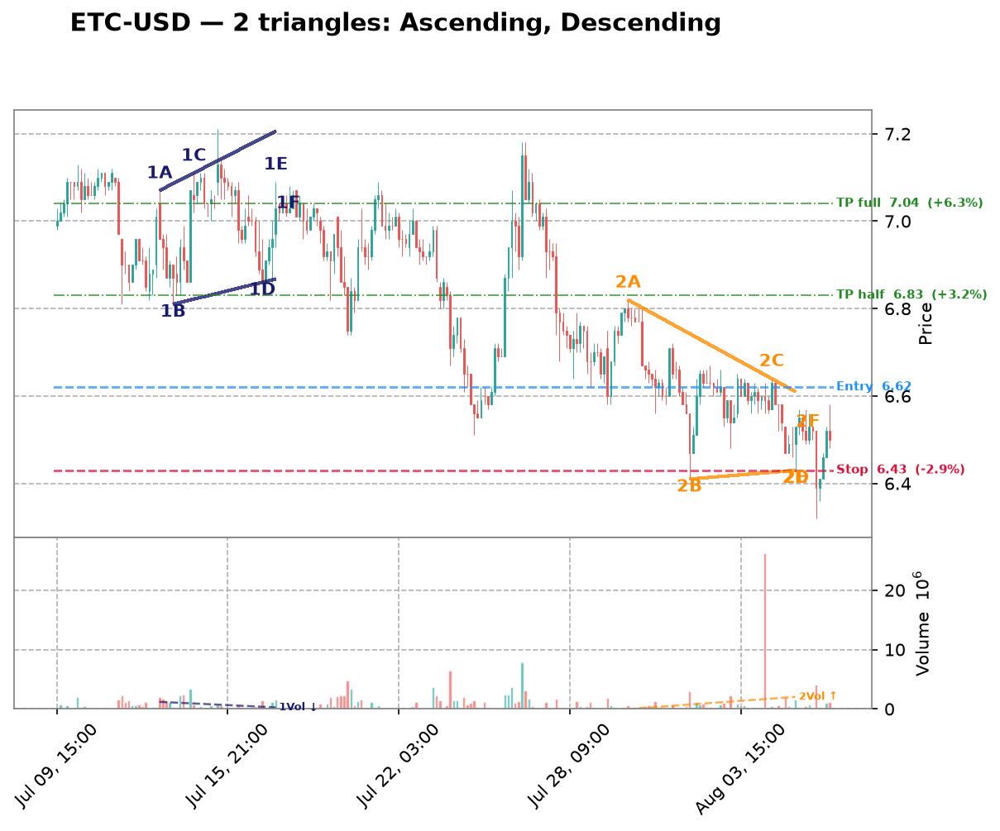

| Date | Symbol | TF | Pattern | Dir | Verdict | Claude Pattern | Claude Dir | Conf | Rec |
|---|---|---|---|---|---|---|---|---|---|
| crypto 10 patterns | |||||||||
| 2026-08-11 | DOGE-USD | 1d | Descending | LONG | Disputed | ? | ? | Certainty: 78 | — |
Chart  Claude Notes The right side of the chart (Jun 15 - Aug 04) shows a strong sustained downtrend from ~0.09 to ~0.07, followed by a flat, low-volatility consolidation around 0.07 with minimal range. There's no clear descending upper trendline with distinct lower highs converging into a flat support - instead price simply fell and then flattened out with very tight, choppy candles near the lows. This looks more like a downtrend flattening into a basing/consolidation zone rather than a descending triangle with two converging trendlines. Volume has also declined sharply, consistent with consolidation rather than an active triangle squeeze. I disagree with the algorithm's descending triangle (LONG) call because there isn't a clear pattern of lower highs touching a defined resistance line while support holds flat - the price action at the right edge is too flat/compressed to show a classic converging descending triangle, and calling it LONG direction is also inconsistent with a descending triangle which typically implies bearish continuation, not long bias. Presence certainty 78/100 — how sure Claude is that its found/not-found call is correct | |||||||||
| 2026-08-11 | VET-USD | 1d | Descending | LONG | Disputed | ? | ? | Certainty: 78 | — |
Chart  Claude Notes The right side of the chart (late June through July) shows price consolidating in a tight, flat range between roughly 0.0045-0.0050 with no clear converging trendlines - highs and lows are essentially horizontal, not narrowing. This looks more like a flat consolidation/rectangle than a descending triangle, which requires a clearly falling upper resistance line converging with a flat support. There's no series of lower highs compressing toward a flat base; instead price is chopping sideways with roughly equal highs and lows. The algorithm likely flagged the overall downtrend into a range as a triangle, but the recent price action lacks the diagonal upper trendline needed to confirm a descending triangle. Presence certainty 78/100 — how sure Claude is that its found/not-found call is correct | |||||||||
| 2026-08-11 | XRP-USD | 1d | Descending | LONG | Disputed | ? | ? | Certainty: 72 | — |
Chart  Claude Notes The right side of the chart (Jul-Aug) shows price oscillating in a fairly tight, roughly flat horizontal range between ~1.05 and ~1.15, but there is no clear converging structure - both the highs and lows are essentially flat/sideways rather than one line descending toward a rising or flat support. This looks more like a rectangle/consolidation range than a descending triangle, since a descending triangle requires clearly lower highs compressing into a flat support. The overall multi-month trend is a steady downtrend with a leveling off recently, but no distinct apex or narrowing wedge is visible near the right edge. I disagree with the algorithm's descending triangle call - the upper boundary isn't making consistent lower highs, it's mostly flat like the lower boundary, so this reads as sideways consolidation rather than a triangle. Presence certainty 72/100 — how sure Claude is that its found/not-found call is correct | |||||||||
| 2026-08-11 | ETH-USD | 1d | Symmetric | SYMMETRIC | Disputed | ? | ? | Certainty: 70 | — |
Chart  Claude Notes Right side of chart (mid-July onward) shows price consolidating in a tight, roughly flat range between ~1830 and ~1950 with no clear convergence - highs and lows are both flat/sideways rather than converging toward an apex. This looks more like a flat/rectangular consolidation than a symmetric triangle, since neither the upper nor lower boundary shows a meaningful slope toward each other. There are only 2-3 touches on each side and the range width isn't visibly narrowing over the last 15-20 candles. The algorithm likely misread this sideways chop as a symmetric triangle, but the lack of clear converging trendlines makes this a weak/ambiguous case rather than a credible triangle setup. Presence certainty 70/100 — how sure Claude is that its found/not-found call is correct | |||||||||
| 2026-08-11 | SOL-USD | 1d | Symmetric | SYMMETRIC | Both detect, differ on type | Descending | SHORT | Quality: 42 | avoid |
Chart  Claude Notes From late June to early August price oscillates in a tightening range: highs step down from ~83 (Jun 30) to ~78 (mid-Jul) to ~76-77 (late Jul), while lows sit fairly flat around 71-75. This looks more like a mildly descending resistance line over a flat-ish support line (descending triangle) rather than a clean symmetric wedge, since the lower boundary isn't clearly rising. The algorithm's 'symmetric' call is plausible but the upper trendline's slope is more pronounced than the lower one, making 'descending' a better fit. Touch points are only 2-3 per side and somewhat loose (within a candle or two), and price is still contained near the apex with no confirmed breakout yet, so the pattern is still forming but not textbook-clean. Symbol Research Solana (SOL) is a high-throughput Layer-1 blockchain used for DeFi, NFTs, and payments. It has seen renewed institutional interest via ETF filings and network activity growth in 2024, but remains volatile and sentiment-driven, correlating heavily with BTC/ETH macro crypto trends. Market Sentiment neutral Presence certainty 55/100 — how sure Claude is that its found/not-found call is correct Pattern quality 42/100 — how clean/tradable this specific triangle is Research confidence 20/100 — Phase B research conviction Supporting Signals
Opposing Signals
| |||||||||
| 2026-08-11 | MANA-USD | 4h | Ascending | SHORT | Disputed | ? | ? | Certainty: 82 | — |
Chart  Claude Notes The right side of the chart (late July into August) shows a choppy, range-bound consolidation between roughly 0.0655 and 0.0685, with no clear converging trendlines. Highs and lows are roughly flat/horizontal rather than forming a rising support line or a defined resistance line - there's no consistent higher-low sequence needed for an ascending triangle. Price action looks more like sideways noise/a shallow range than a compressing wedge. I disagree with the algorithm's ascending triangle flag; there's no discernible rising support line with 2-3 clean touch points, and the upper boundary isn't tightly defined either. This looks like a flat consolidation range rather than a genuine triangle pattern. Presence certainty 82/100 — how sure Claude is that its found/not-found call is correct | |||||||||
| 2026-08-11 | SAND-USD | 4h | Descending | LONG | Disputed | ? | ? | Certainty: 75 | — |
Chart  Claude Notes The overall chart shows a sustained downtrend from early July (~0.051) declining steadily to ~0.041-0.043 by early August, not a converging triangle. The right-side price action (late Jul 29 - Aug 6) shows a choppy, range-bound consolidation between roughly 0.041 and 0.044, but the highs and lows are relatively flat/parallel rather than converging - there's no clear descending upper trendline making distinctly lower highs while the lower support stays flat. It looks more like a shallow rectangle/consolidation range after a downtrend, possibly a minor flag, rather than a descending triangle with clear convergence toward an apex. I don't see the resistance line sloping down into the support with a well-defined apex; touches are inconsistent and volume doesn't show typical contraction pattern before breakout. I disagree with the algorithm's descending triangle call - the structure lacks convincing convergence and clean touch points on both boundaries near the right edge. Presence certainty 75/100 — how sure Claude is that its found/not-found call is correct | |||||||||
| 2026-08-11 | XLM-USD | 3h | Descending | LONG | Disputed | ? | ? | Certainty: 85 | — |
Chart Claude Notes The chart shows a clear, sustained downtrend from early July through early August, with a series of lower highs and lower lows forming a staircase pattern - not a converging triangle. At the right edge, price is making new lows (~0.16) with no evidence of a rising support line or flat resistance line converging toward an apex. There's no compression in range - if anything, the recent candles show continued directional decline with small consolidation, not narrowing volatility. The algorithm's 'ascending triangle' flag appears to be a false positive, likely picking up on minor higher-low bounces within the broader downtrend (e.g., around Jul 27-Aug 2) without the corresponding flat resistance ceiling required for an ascending triangle. I see no clear two-line convergence structure near the right edge; the dominant pattern is a strong downtrend with price already well below all prior consolidation zones. Presence certainty 85/100 — how sure Claude is that its found/not-found call is correct | |||||||||
| 2026-08-11 | ETC-USD | 3h | Descending | LONG | Disputed | ? | ? | Certainty: 82 | — |
Chart  Claude Notes The chart shows a clear downtrend from ~7.2 to ~6.4 with a series of lower highs and lower lows, not a converging triangle. There's no flat support line - the lows keep dropping (7.0 -> 6.6 -> 6.55 -> 6.4). The right edge shows continued consolidation around 6.4-6.6 with no clear horizontal support being tested repeatedly, and highs are also declining rather than being tested against a defined descending resistance with a flat base. This looks like a steady downtrend/staircase pattern rather than a descending triangle, which requires a flat/horizontal support line with a falling resistance line. I disagree with the algorithm's flag - the structure is more consistent with a bearish trend than a compressing triangle near apex. Presence certainty 82/100 — how sure Claude is that its found/not-found call is correct | |||||||||
| 2026-08-11 | VET-USD | 3h | Ascending | SHORT | Disputed | ? | ? | Certainty: 78 | — |
Chart Claude Notes The right side of the chart shows a choppy, range-bound decline from ~0.0048 to ~0.0046, but there's no clear convergence between upper and lower boundaries. Highs are declining (0.0048 -> 0.0047 -> 0.0046) while lows are roughly flat around 0.0046, which if anything resembles a mild descending pattern, not ascending. There's no evidence of rising higher-lows against a flat resistance line as required for an ascending triangle. Price action looks more like a drifting consolidation/minor downtrend with overlapping candles rather than a well-defined triangle with clean touch points. I disagree with the algorithm's ascending triangle call — the lower boundary is flat-to-slightly-declining, not rising, and the structure lacks the clear 3+ touch convergence needed to call this a tradable triangle. Presence certainty 78/100 — how sure Claude is that its found/not-found call is correct | |||||||||
| crypto-equity 5 patterns | |||||||||
| 2026-08-11 | MSTR | 3h | Descending | LONG | Disputed | ? | ? | Certainty: 65 | — |
Chart  Claude Notes After the sharp decline into late June, price has been oscillating in a fairly flat, range-bound consolidation between roughly 92-104, without clear directional convergence. Highs are not consistently declining (e.g., early July ~99, mid-July ~103, late July ~99) and lows are not consistently flat or rising in a way that forms a clean descending triangle. The right edge shows small choppy candles around 95-98, which looks more like continued range-bound consolidation/noise rather than a well-defined triangle with clear converging trendlines and multiple respected touch points. I don't see a convincing descending resistance line with 3+ touches paired with a flat support - it's more of a rectangle/range than a triangle. Presence certainty 65/100 — how sure Claude is that its found/not-found call is correct | |||||||||
| 2026-08-09 | MSTR | 1h | Ascending | SHORT | Disputed | ? | ? | Certainty: 78 | — |
Chart  Claude Notes The right-side price action (late Aug 5 into Aug 6) shows a decline from ~99 to ~96.5 with lower highs and lower lows together — this looks like a mild downtrend/pullback rather than a converging triangle with a rising support line. There's no clear rising trendline of higher lows; instead both highs and lows are declining in tandem, more consistent with a small descending channel or simple retracement than an ascending triangle. No flat resistance line is visible either (highs are dropping from ~99 to ~97.5 to ~97). I don't see the two clearly converging trendlines required for a valid triangle at the right edge, so I disagree with the algorithm's ascending triangle / short flag. Presence certainty 78/100 — how sure Claude is that its found/not-found call is correct | |||||||||
| 2026-08-09 | CIFR | 1h | Descending | LONG | Disputed | ? | ? | Certainty: 78 | — |
Chart  Claude Notes The chart shows a series of large swing oscillations (roughly 26->18->24->17->26->18->25->18) rather than a converging structure. Each swing has similar amplitude, indicating a broad trading range/downtrend with volatility rather than a narrowing triangle. Near the right edge, price is declining from ~25 to ~18-19 with no flattening support line or clear lower highs converging into an apex - the recent candles show a steady downward slide, not compression. There is no consistent horizontal support with descending highs; the swings are too wide and repetitive to qualify as a descending triangle. I disagree with the algorithm's flag - this looks like continued range-bound/down-trending price action, not a triangle nearing apex. Presence certainty 78/100 — how sure Claude is that its found/not-found call is correct | |||||||||
| 2026-08-09 | MARA | 1h | Descending | LONG | Disputed | ? | ? | Certainty: 78 | — |
Chart  Claude Notes {
"found_triangle": false,
"pattern_type": null,
"direction": null,
"presence_confidence": 78,
"pattern_quality": null,
"notes": "The chart shows an overall downtrend with successive lower highs (15, 14, 13, 12.7, 12) and lower lows (12, 11.8, 10.7, 10, 10.7), forming a descending staircase rather than a converging triangle. There's no flat/horizontal support line - the lows are also declining, not holding at a consistent level. At the right edge, price is consolidating in a tight range around 10.7-12 but without clear evidence of a rising lower boundary or flat lower support meeting a descending upper trendline with 3+ touches each. This looks more like a broader downtrend with intermittent consolidation than a well-defined descending triangle. The algorithm's flag is plausible given the recent narrowing range, but the lower boundary isn't flat - it's still sloping down, making this more consistent with a bearish channel/flag than a classic descending triangle setup for a LONG bias, which would typically need a firm horizontal support.",
} Presence certainty 78/100 — how sure Claude is that its found/not-found call is correct | |||||||||
| 2026-08-09 | IREN | 1h | Symmetric | SYMMETRIC | Disputed | ? | ? | Certainty: 72 | — |
Chart  Claude Notes The chart shows a broad downtrend from late June (~57) into a choppy bottoming/ranging structure from mid-July through early August, oscillating between roughly 30 and 44 with multiple swing highs and lows of similar magnitude - more like a wide horizontal range than a converging wedge. Near the right edge (early August), price is bouncing between ~37-41 without clear narrowing of highs and lows; recent candles show similar range width to prior weeks rather than compression toward an apex. I don't see two clearly converging trendlines with consistent touch points - the swing highs (44, 43, 41) and lows (33, 30, 36) don't form a tight symmetric convergence, they look more like a rounded/ranging base. I disagree with the algorithmic flag; this looks more like consolidation/basing after a downtrend rather than a well-defined symmetric triangle. Presence certainty 72/100 — how sure Claude is that its found/not-found call is correct | |||||||||
| mega-cap 4 patterns | |||||||||
| 2026-08-11 | AMZN | 1d | Descending | LONG | Disputed | ? | ? | Certainty: 82 | — |
Chart  Claude Notes The right side of the chart shows a sharp rally from ~230 to ~287, followed by a pullback over the last 3-4 candles down to ~273. This is a strong impulsive move with a retracement, not a converging triangle - there's no evidence of multiple touches on a flat support line or descending resistance line. The recent price action (last 4 candles) is too short and simply looks like consolidation/pullback after a breakout rally, not a defined triangle with 2+ touches per side. The algorithm likely mistook the pullback highs (283, 281, 279) as a descending resistance line, but there's no corresponding flat support - the lows are also declining somewhat in tandem, and there are only 3-4 candles to work with, insufficient for confident triangle identification. This looks more like a flag/pennant continuation pattern after a sharp rally, or simple profit-taking, rather than a classic descending triangle which requires a flat support base with lower highs above it. Presence certainty 82/100 — how sure Claude is that its found/not-found call is correct | |||||||||
| 2026-08-11 | NVDA | 1d | Descending | LONG | Disputed | ? | ? | Certainty: 78 | — |
Chart  Claude Notes The chart shows a clear downtrend from mid-May highs (~230) to late-July lows (~190), followed by a sharp V-shaped bounce into early August with strong bullish candles (219-224). There's no visible convergence or compression pattern near the right edge - instead price made a low around 190-197 in early Aug and then rallied strongly with large-bodied green candles and expanding range, not narrowing. This looks like a breakout/reversal move off a downtrend low, not a descending triangle formation. A descending triangle requires a flat support line with lower highs compressing into it, but here the recent price action shows expanding volatility and a strong impulsive rally, not a tightening range. I don't see at least two clean touches on a flat lower support combined with a clearly descending upper resistance converging near the current price - the structure is more consistent with a rounded bottom/reversal than a continuation triangle. Presence certainty 78/100 — how sure Claude is that its found/not-found call is correct | |||||||||
| 2026-08-11 | META | 1d | Descending | LONG | Disputed | ? | ? | Certainty: 68 | — |
Chart  Claude Notes The right-side price action (late July into early August) shows a sharp drop from ~685 down to ~525, then a choppy recovery/consolidation in the 585-605 range with no clear rising support or flat resistance forming a converging structure. There's no consistent flat support line (lows vary between 525-600) nor a clean descending resistance line with progressively lower highs touching a trendline at least twice. The recent candles look more like a base/consolidation after a sharp selloff rather than a well-defined triangle. I don't see the 2-3 touch points on each side needed to confidently draw converging trendlines, so I disagree with the algorithm's descending triangle flag. Presence certainty 68/100 — how sure Claude is that its found/not-found call is correct | |||||||||
| 2026-08-11 | GOOGL | 4h | Ascending | SHORT | Disputed | ? | ? | Certainty: 82 | — |
Chart  Claude Notes The right side of the chart shows a strong uptrend from ~318 to a peak near 382, followed by a sharp pullback to ~358-365. This is not a consolidating triangle - it's a strong impulsive rally followed by a retracement. There's no clear flat resistance being tested multiple times, nor a rising support line with multiple touchpoints forming a converging wedge. The last few candles show a decline off the highs, which looks more like profit-taking after a breakout rather than compression into an apex. The algorithm likely mistook the steep rally and pullback for an ascending triangle, but there aren't the required 2+ touches on a flat/near-flat upper resistance line - price simply broke to new highs and is now pulling back. This looks like a failed/invalid pattern rather than a credible ascending triangle setup for a short. Presence certainty 82/100 — how sure Claude is that its found/not-found call is correct | |||||||||
| semiconductors 3 patterns | |||||||||
| 2026-08-11 | ADI | 4h | Descending | LONG | Not reviewed | ? | ? | — | — |
Chart  Claude Notes {
"found_triangle": false,
"pattern_type": null,
"direction": null,
"presence_confidence": 62,
"pattern_quality": null,
"notes": "The chart shows a clear downtrend from late June (~440) into early August (~355), followed by a modest bounce into the last few candles (375-385). There isn't a well-defined pair of converging trendlines: the 'support' the algorithm may be referencing (around 355-365) only has 2 touches and isn't clearly flat, while the highs from late July to early August are irregular, not forming a consistent declining resistance line. The recent price action (last 8-10 candles) looks more like a basing/consolidation after a strong downtrend, with possibly rising lows (353→363→375) rather than a descending triangle's declining highs. This looks more like early | |||||||||
| 2026-08-09 | LRCX | 1h | Ascending | SHORT | Disputed | ? | ? | Certainty: 72 | — |
Chart  Claude Notes The right-side price action (early Aug) shows a choppy range between roughly 305-320, but there's no clear ascending support line—lows are flat/noisy (around 305-308) rather than making distinct higher lows, and the highs are also roughly flat (~315-320) rather than converging. This looks more like a horizontal consolidation/rectangle than a true ascending triangle. The algorithm likely flagged minor higher-low bumps, but there aren't 2-3 clean touch points forming a rising trendline distinct from a flat one. Prior to this, price action from mid-July was a clear downtrend with lower highs/lower lows, not a triangle. Given the ambiguity of the recent consolidation, I lean toward rejecting the triangle call, though a loose case for a shallow ascending structure isn't impossible. Presence certainty 72/100 — how sure Claude is that its found/not-found call is correct | |||||||||
| 2026-08-09 | AMAT | 1h | Symmetric | SYMMETRIC | Disputed | ? | ? | Certainty: 72 | — |
Chart  Claude Notes The right side of the chart shows a rally from ~500 to ~555 followed by a pullback to ~530, but this looks like a rounded top / pullback within a broader swing rather than a converging triangle. There's no clear sequence of lower highs meeting higher lows - the recent candles (Aug 03-08) show a peak around 555 then a fairly sharp drop to 530, which is more consistent with a short-term downtrend or consolidation than a symmetric wedge. I don't see at least two clean, roughly parallel converging trendlines with multiple touches on each side near the apex. The algorithm may be reacting to the general narrowing of range after the spike, but the touch points are too few and inconsistent to confirm a genuine symmetric triangle. Presence certainty 72/100 — how sure Claude is that its found/not-found call is correct | |||||||||
| forex 2 patterns | |||||||||
| 2026-08-09 | EURUSD=X | 1h | Ascending | SHORT | Disputed | ? | ? | Certainty: 82 | — |
Chart  Claude Notes The right side of the chart shows a clear downtrend from the Aug 5 peak (~1.156) into Aug 6, with lower highs and lower lows in a fairly consistent decline, followed by a flattening/consolidation near 1.1525-1.153. There's no clear rising support line with higher lows to form an ascending triangle - instead price dropped sharply and is now consolidating in a narrow range without a defined converging structure. The algorithm's ascending triangle call doesn't fit since there's no series of higher lows visible; the recent price action looks more like a sharp decline stabilizing at a new lower level rather than a triangle compression. Not enough touch points on both an upper and lower trendline to confirm any triangle pattern near the apex on the right edge. Presence certainty 82/100 — how sure Claude is that its found/not-found call is correct | |||||||||
| 2026-08-09 | NZDUSD=X | 1h | Ascending | SHORT | Disputed | ? | ? | Certainty: 78 | — |
Chart  Claude Notes The right side of the chart shows price consolidating in a choppy range between ~0.5865 and ~0.590 after a strong impulsive rally from late July. However, this looks more like a flat/rectangular consolidation than an ascending triangle - the highs are roughly flat (~0.590) but the lows are also fairly flat/choppy (~0.5865-0.587), not showing a clear rising sequence of higher lows. There's no clean converging trendline structure - both boundaries appear roughly horizontal rather than one flat and one rising. This resembles sideways consolidation or a minor pullback/flag after the breakout rather than a textbook ascending triangle with rising support. The algorithm's flag seems to be picking up on the tightening range but the specific 'rising lower trendline' criterion for ascending triangle isn't clearly satisfied here. Presence certainty 78/100 — how sure Claude is that its found/not-found call is correct | |||||||||
| hardware 2 patterns | |||||||||
| 2026-08-11 | DELL | 1d | Ascending | SHORT | Disputed | ? | ? | Certainty: 78 | — |
Chart  Claude Notes The chart shows a strong uptrend from mid-April through early June, followed by a broad sideways consolidation with wide swings between roughly 370-460 from early June through August, and recently a fresh push higher into the low 480s. There's no clear convergence of upper and lower boundaries near the right edge - highs and lows are both oscillating with similar amplitude rather than compressing. The most recent candles show price pulling back from a local high (~485) but this looks more like a range/consolidation than a converging triangle. I don't see a rising lower trendline paired with a flat/declining upper resistance line with multiple clean touch points - the algorithm's ascending triangle flag isn't well supported by the visual structure, which looks more like a rectangle/range or just choppy consolidation within an uptrend. Presence certainty 78/100 — how sure Claude is that its found/not-found call is correct | |||||||||
| 2026-08-09 | STX | 1h | Descending | LONG | Disputed | ? | ? | Certainty: 72 | — |
Chart  Claude Notes The right-side price action (Aug 03–06) shows a choppy, roughly flat range between ~815 and ~890 with no clear convergence — highs and lows are similarly spaced throughout rather than narrowing toward an apex. There's a sharp downside wick near Aug 06 breaking below the recent range low (~780), which argues against a clean descending triangle setup (support was violated, not respected). I don't see a consistent flat support line with lower highs converging into it; instead it looks like sideways consolidation/noise with one outlier spike down. Not enough clean touch points on both a flat lower line and a descending upper line to call this a credible descending triangle. Presence certainty 72/100 — how sure Claude is that its found/not-found call is correct | |||||||||
| space 2 patterns | |||||||||
| 2026-08-11 | GSAT | 1d | Descending | LONG | Disputed | ? | ? | Certainty: 78 | — |
Chart  Claude Notes The chart shows a downtrend from late May through late July, then a sharp gap-up breakout in early August with a large green candle jumping from ~81 to ~84, followed by consolidation around 83-84. There's no clear descending triangle structure - no flat support line with lower highs converging into it. Instead we see a clean downtrend followed by an abrupt breakout gap and now sideways consolidation at the top. The recent price action (last 4-5 candles) is too short and tight to confidently draw two converging trendlines with multiple touch points. This looks more like a post-breakout consolidation/flag than a triangle in formation. I disagree with the algorithm's descending triangle flag - there's no evidence of a flat support level being tested multiple times with descending highs; the price action instead shows a trend reversal via gap breakout. Presence certainty 78/100 — how sure Claude is that its found/not-found call is correct | |||||||||
| 2026-08-11 | SPCE | 4h | Descending | LONG | Disputed | ? | ? | Certainty: 65 | — |
Chart  Claude Notes The chart shows a sharp downtrend from early June (peak ~6.0) declining into a basing/consolidation zone around 2.5-3.0 from early July through early August. This is not a descending triangle - the price action after the initial decline is essentially flat/ranging with no clear lower highs (upper boundary is flat, not descending) and no consistent higher lows either. The recent right-edge action shows a small breakout/rally from ~2.5 to ~2.9 with a slight upward drift, which looks more like a basing pattern or minor uptrend than a converging triangle. There isn't a clear descending resistance line - highs in the recent consolidation zone are roughly flat (2.7-3.0), not declining. Volume is also declining throughout, consistent with consolidation rather than a compressing triangle. I disagree with the algorithm's descending triangle flag - the structure lacks the lower-high sequence needed for a descending triangle's upper trendline. Presence certainty 65/100 — how sure Claude is that its found/not-found call is correct | |||||||||
| adtech 1 pattern | |||||||||
| 2026-08-11 | U | 1d | Ascending | SHORT | Disputed | ? | ? | Certainty: 90 | — |
Chart  Claude Notes The right side of the chart shows a strong, sustained uptrend with a sharp breakout/impulse move in the final few candles (price jumping from ~30 to ~41 with a large volume spike), not a converging triangle. There's no clear flat or descending resistance line being tested multiple times - price is simply accelerating upward through prior levels. The 'ascending triangle' flag doesn't hold up: there's no horizontal resistance being repeatedly tested and rejected; instead price broke decisively higher with expanding range and volume, which looks like a breakout/impulse continuation rather than a compressing pattern. This looks more like the end of a basing/accumulation phase (May-July consolidation) followed by a strong breakout, not a triangle currently forming near the apex. Presence certainty 90/100 — how sure Claude is that its found/not-found call is correct | |||||||||
| commodities 1 pattern | |||||||||
| 2026-08-11 | NEM | 4h | Descending | LONG | Disputed | ? | ? | Certainty: 80 | — |
Chart  Claude Notes The chart shows a clear downtrend from mid-June highs (~112) to a low around ~89-90 in mid-July, followed by a recovery/uptrend into early August (~105). This is a V-shaped reversal, not a converging triangle. There's no flat support line with descending highs forming a wedge near the right edge - instead price is making higher highs and higher lows (Jul 20 - Aug 07), which looks more like an ascending/uptrend structure than a descending triangle. The algorithm's descending triangle flag doesn't match the visual structure; the right-side price action shows steady climbing candles with increasing lows, not compression into an apex with a flat bottom and lower highs. No clear two-line convergence is visible at the right edge. Presence certainty 80/100 — how sure Claude is that its found/not-found call is correct | |||||||||
| fintech 1 pattern | |||||||||
| 2026-08-11 | SOFI | 1d | Descending | LONG | Disputed | ? | ? | Certainty: 75 | — |
Chart  Claude Notes The right edge shows a sharp V-shaped reversal: a steep selloff into late July (spike down to ~15) followed by a strong rally back to ~18.5-19. This is an impulsive move, not a converging consolidation. There's no clear flat support line or descending resistance line with multiple touches - just one low spike and a rapid recovery. The algorithm likely mistook the pre-selloff choppy range (Jun30-Jul29, oscillating 17-19.5) as forming lower highs, but that range was more of a broad trading range/mild downtrend than a converging triangle, and it was invalidated by the sharp breakdown and V-recovery. Price has already broken both directions (down then up sharply), which contradicts a triangle still compressing toward an apex. I don't see 2+ clean touches on both a flat support and descending resistance converging near the current price. Presence certainty 75/100 — how sure Claude is that its found/not-found call is correct | |||||||||
| industrials 1 pattern | |||||||||
| 2026-08-09 | RCL | 1h | Ascending | SHORT | Disputed | ? | ? | Certainty: 80 | — |
Chart  Claude Notes The right side of the chart shows price oscillating in a fairly flat range between ~318 and ~330 after a strong impulsive rally from late July. There's no clear rising lower support line - the recent lows (~320-322) are roughly flat or even slightly declining, not making higher lows as required for an ascending triangle. The highs are also roughly flat (~328-330) rather than converging with the lows. This looks more like a consolidation/range or minor pullback after a strong uptrend rather than a converging triangle. I don't see two clear trendlines converging toward an apex - the pattern lacks the compression structure needed. Disagreeing with the algorithm's ascending triangle flag; the structure is closer to a flat consolidation/rectangle than a triangle with rising support. Presence certainty 80/100 — how sure Claude is that its found/not-found call is correct | |||||||||
| internet 1 pattern | |||||||||
| 2026-08-11 | SNAP | 1d | Descending | LONG | Disputed | ? | ? | Certainty: 85 | — |
Chart  Claude Notes The chart shows a downtrend from late April through mid-June, a basing/consolidation period from mid-June to early August around 4.3-5.0, and then a sharp breakout candle around Aug 3-5 that spikes to 5.8 before pulling back. There's no clear descending triangle structure - the consolidation phase (Jun 18-Aug 3) shows relatively flat, choppy price action without a clearly falling upper trendline (highs are roughly flat around 4.9-5.0, not descending) or a clean rising/flat lower support with multiple respected touches. The recent large green candle breaking to 5.8 already represents a breakout out of the prior range, not a triangle still compressing into an apex. This looks more like a basing pattern followed by a breakout/spike rather than a converging triangle at the right edge. Presence certainty 85/100 — how sure Claude is that its found/not-found call is correct | |||||||||